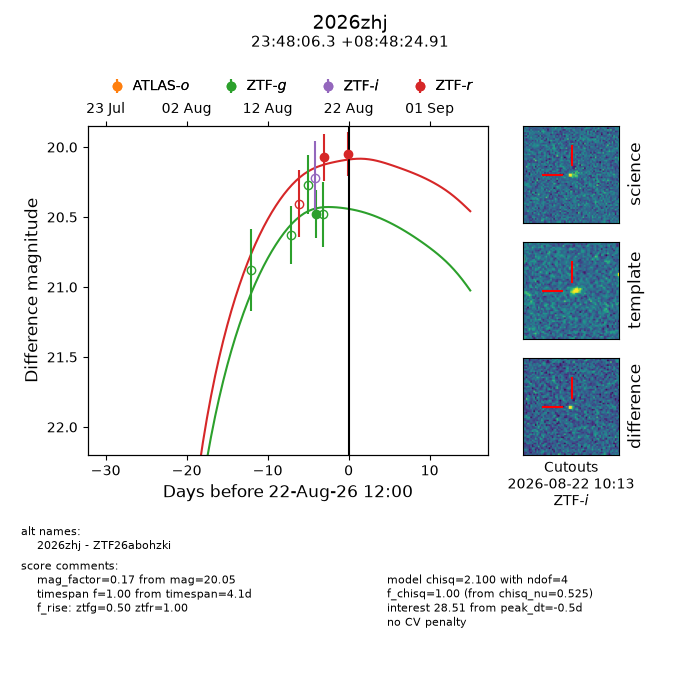
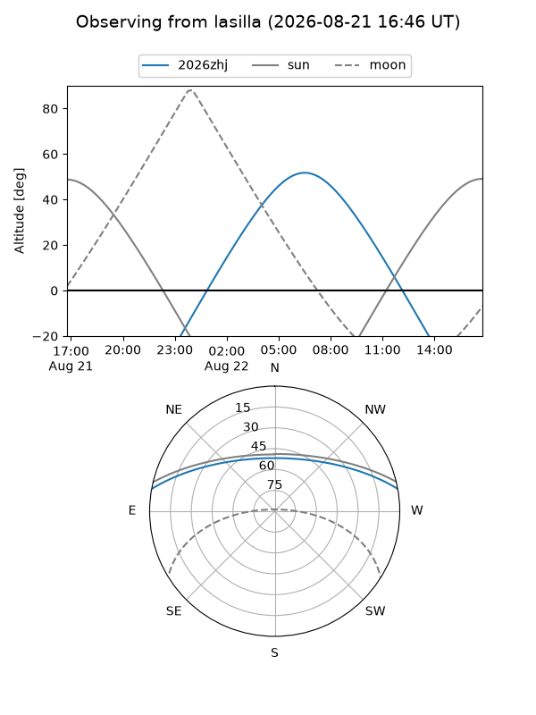
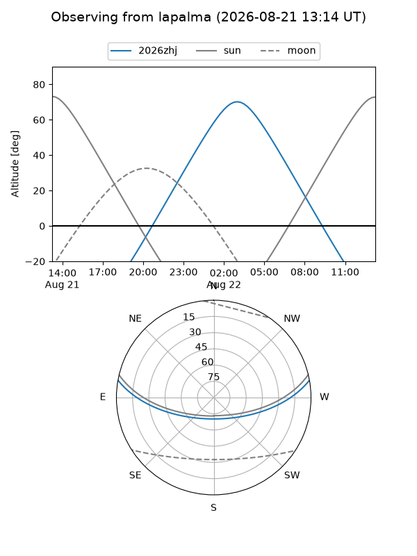
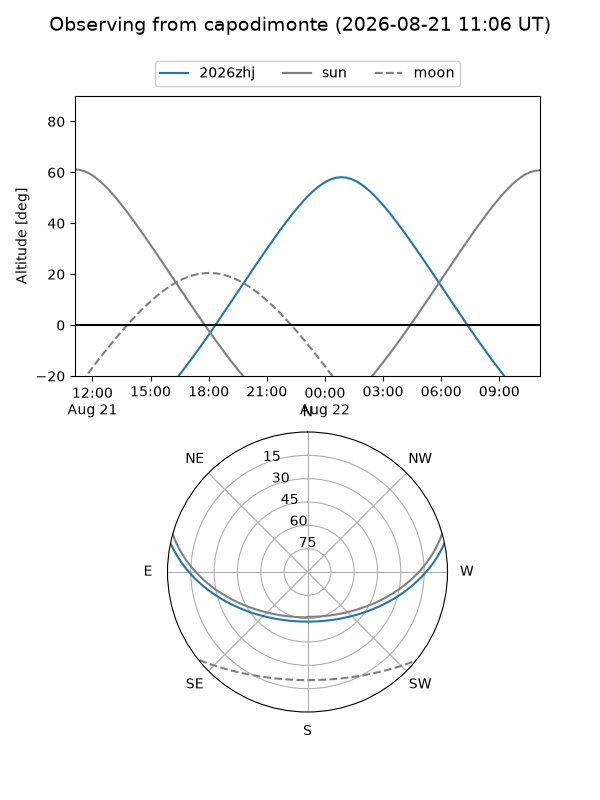
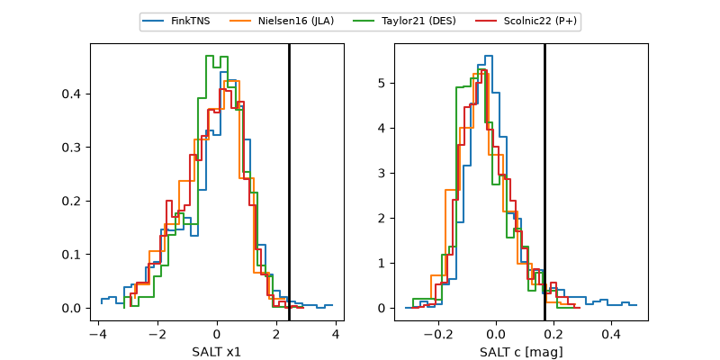

2026zhj
Target 2026zhj at 2026-08-22 12:03
Aliases and brokers:
FINK-ZTF: ztf.fink-portal.org/ZTF26abohzki
Lasair-ZTF: lasair-ztf.lsst.ac.uk/objects/ZTF26abohzki
ALeRCE-ZTF: alerce.online/object/ZTF26abohzki
YSE-PZ: ziggy.ucolick.org/yse/transient_detail/2026zhj
TNS name: wis-tns.org/object/2026zhj
Direct TNS query: direct search
alt names
ZTF26abohzki (ztf,fink_ztf)
2026zhj (tns,yse)
Coordinates:
equatorial (ra, dec) = 357.0264,+8.80692
equatorial (HMS+DMS) = 23:48:06.32,+08:48:24.91
galactic (l, b) = (97.6082,-50.92430)
Flags:
TNS type: nan
peak dt: -0.5
Photometry:
last ztfg=20.48, ztfr=20.05
1 ztfg, 2 ztfr detections
Lightcurve

Visibility



Additional plots
